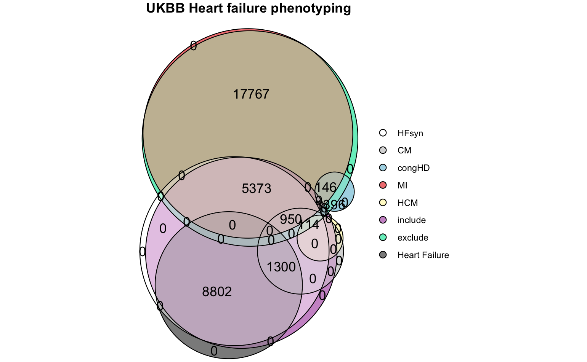
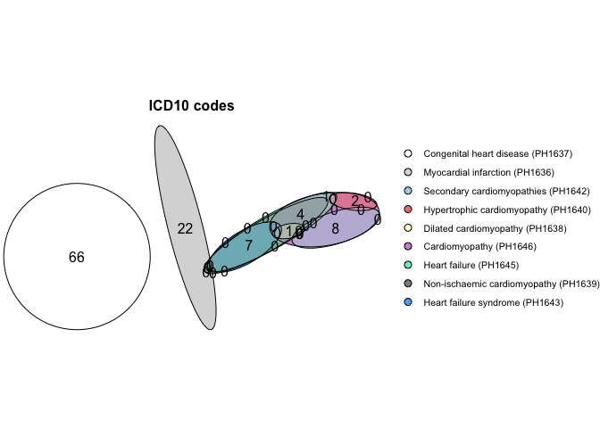

UKBB phenotyping example
ukbb_phenotyping.RmdExample phenotyping of UKBB data
Phenotyping of the UK biobank hospital admissions data.
pheno_ukbb <- phenotype(file_path,
id_col = "eid",
code_cols = list("ICD10 codes" = "diag_icd10", "ICD9 codes" = "diag_icd9"),
include = list(HF = "PH1645", CM = "PH1646"),
exclude = list(congHD = "PH1637", MI = "PH1636", HCM = "PH1640"),
gsub = list("\\.", "", c("x")),
name = "Heart Failure")
plot(eulerr::euler(pheno_ukbb[, mget(names(pheno_ukbb)[!names(pheno_ukbb) %in% c("eid", "none")])], shape = "circle"),
quantities = TRUE,
labels = FALSE,
main = list(label = "UKBB Heart failure phenotyping", fontsize = 8, font = 2),
legend = list(fontsize = 8))
Plot the ICD-10 HERMES phenotypes
Plot the overlap of the HERMES phenotypes with all other heart failure phenotypes in the UKHDR Phenotype library.
plot_code_overlap(pheno_ids = hermes_phenos, types = c("ICD10 codes"))